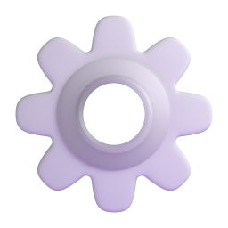

Guias de C++
Aprofunde-se nas técnicas de programação em C++, com guias voltados a uma variedade de conhecimentos.
Guias de Design Web
Aprenda a estruturar e estilizar páginas web com as linguagens fundamentais da internet.
Guias de Arquitetura Computacional
Aprenda sobre bases numéricas, expressões booleanas, redução de circuitos e etc.
Guia de Info Básica
Aprenda sobre os periféricos (mouse, teclado), componentes (CPU, GPU), tipos de memória (RAM, HD, SSD) e etc.
Guias de Matemática
Este é um módulo extra focado em agrupar alguns guias essenciais matemáticos, auxiliares para as matérias técnicas.
Área dos Jogos
Deseja descontrair? Aqui estão alguns joguinhos.